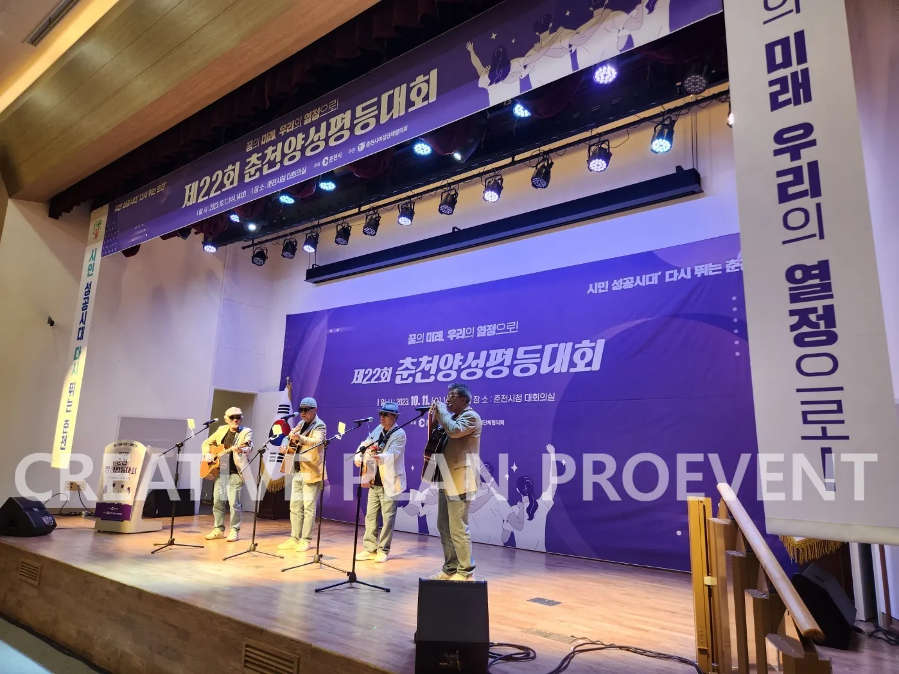
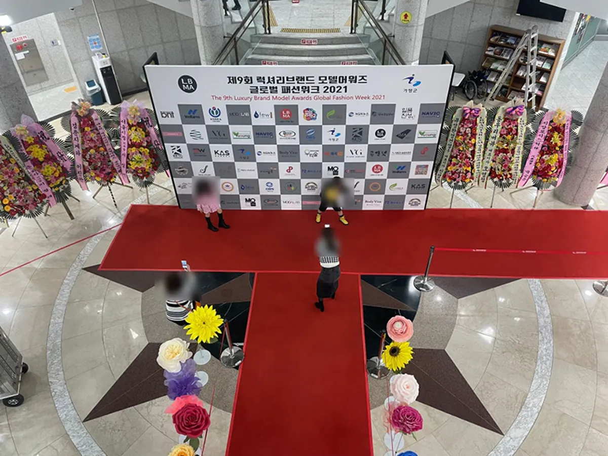
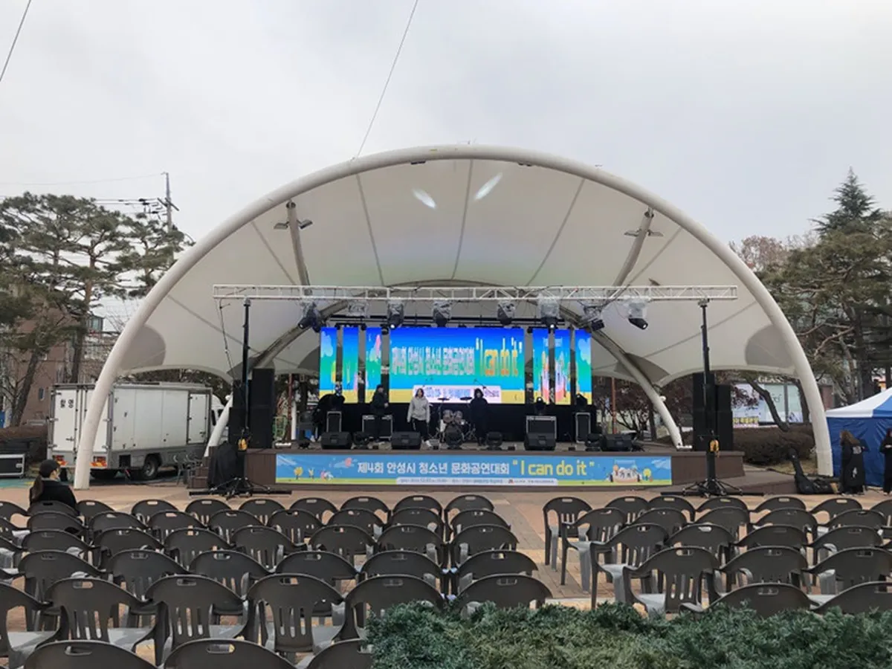

춘천 기념식 행사 대행에서 담당자가 가장 신경 써야 할 것은 식순과 의전이 한 치도 어긋나지 않게 하는 것입니다. 기념식은 내빈 소개 순서 하나, 이름 하나가 틀려도 행사 전체의 인상이 바뀝니다. 프로이벤트는 제22회 춘천시 양성평등대회 총기획 (2023)을 맡았고, 춘천시 양성평등행사 송년회 · MC · 음향 · 조명 (2026)도 진행했습니다. 서울 본사에서 춘천시청까지 차로 약 80분 · 92.3km 로 운영 지역 중 가장 멀어, 세팅과 리허설 일정을 그만큼 앞당겨 잡습니다.

- 기념식 식순은 여는 순서 · 의례 · 기념사 · 시상 · 축하공연 · 마무리의 흐름으로 짭니다.
- 내빈 명단은 소개 순서 · 직함 · 좌석을 한 표로 만들고 행사 전날 다시 확인합니다.
- 강당 기념식은 연단 마이크 · 시상 동선 · 공연 음향을 리허설에서 한 번에 맞춥니다.
- 춘천은 서울 본사에서 차로 약 80분이라 세팅 시작 시각을 앞당기고 리허설을 반드시 둡니다.
1. 춘천 기념식 행사 대행, 식순부터 확정합니다
기념 대회와 기념식은 보통 1부 기념식, 2부 축하 순서로 나뉩니다. 1부는 정해진 형식을 정확히 지키는 것이, 2부는 참석자가 즐겁게 머무는 것이 목표입니다. 식순 초안이 나오면 주최 측 결재를 거쳐 확정하고, 그 뒤에는 진행 대본과 화면 자막을 같은 글자로 맞춥니다.
| 순서 | 내용 | 준비할 것 |
|---|---|---|
| 여는 순서 | 식전 공연 · 개회 선언 | 공연팀, 개회 멘트 |
| 의례 | 국민의례 등 주최 측이 정한 의례 | 음원 · 화면, 일어서는 안내 |
| 내빈 소개 · 기념사 | 소개 순서대로 호명, 기념사 · 축사 | 내빈 명단, 연단 마이크 |
| 시상 | 유공자 · 공로 시상 | 수상자 명단, 시상 음악, 상장 · 상패 |
| 축하공연 | 공연팀 무대 | 공연 음향 · 조명, 리허설 |
| 마무리 | 폐회 · 단체 사진 | 사진 위치, 퇴장 안내 |
2. 내빈 의전과 좌석
의전에서 실수가 생기는 곳은 대개 마지막에 바뀐 명단입니다. 내빈이 늦게 확정되거나 대리 참석으로 바뀌는 일이 생기므로, 명단은 행사 전날 저녁과 당일 아침 두 번 확인합니다. 바뀐 내용은 진행자 대본, 화면 자막, 좌석 이름표에 동시에 반영해야 합니다.
- 내빈 명단: 소개 순서 · 직함 · 이름 · 좌석 번호를 한 표로 정리합니다.
- 좌석: 앞줄 내빈석에 이름표를 붙이고, 연단 · 시상대로 나가는 통로 쪽 자리를 비웁니다.
- 동선: 내빈 도착 → 대기실 → 입장 → 좌석 → 연단까지의 길을 안내 인력이 미리 걸어 봅니다.
- 대리 참석: 직함과 이름을 바꿔 부르는 방식(○○ 대신 ○○)을 주최 측과 미리 정합니다.

3. 강당 무대 · 음향 · 조명
시청 대회의실이나 문화예술회관 같은 강당은 무대가 갖춰져 있지만, 기념식과 축하공연을 같은 무대에서 하려면 추가 장비가 필요한 경우가 많습니다. 연단 마이크는 기념사 · 축사용으로 고정하고, 진행자 · 시상용 무선 마이크를 따로 둡니다. 축하공연이 있으면 공연팀 음향과 무대 조명을 더합니다. 프로이벤트는 음향 · 조명 · 무대 · LED 를 자체 장비와 자체 인력으로 세팅합니다.
| 장비 | 쓰는 순서 | 확인할 것 |
|---|---|---|
| 연단 마이크 | 기념사 · 축사 | 연단 높이, 하울링 |
| 무선 마이크 | 진행 · 시상 · 공연 | 동시에 쓰는 개수 |
| 조명 | 시상 · 축하공연 | 강당 자체 조명 조절 |
| LED 전광판 · 스크린 | 의례 화면 · 수상자 자막 | 화면 비율 · 파일 |
| 무대 · 트러스 | 시상대 · 공연 무대 | 무대 크기 · 계단 위치 |
4. 축하공연 섭외
축하공연은 기념식의 성격에 맞아야 합니다. 시민이 함께하는 대회라면 누구나 따라 부를 수 있는 곡이, 기관 내부 행사라면 짧고 분위기를 여는 공연이 좋습니다. 프로이벤트는 가수 · 아이돌 그룹 · 개그맨 · 방송인 · 강사 섭외와 전문 MC 진행을 행사 성격과 예산에 맞춰 제안합니다.
| 공연 | 잘 맞는 자리 | 확인할 것 |
|---|---|---|
| 가수 · 밴드 공연 | 2부 축하 무대 | 곡 수 · 음원 · 리허설 시간 |
| 개그맨 · 방송인 | 진행 겸 축하 순서 | 출연 시간 · 순서 |
| 초청 공연 | 식전 공연 | 무대 크기 · 대기실 |

5. 먼 거리 행사의 세팅 · 리허설 일정
춘천(춘천시청 · 석사동 · 퇴계동 · 후평동 등)의 행사장까지 서울 본사에서 차로 약 80분 · 92.3km 입니다. 운영 지역 중 가장 멀어 교통 상황에 따라 더 걸릴 수 있으므로, 세팅 시작 시각을 넉넉히 앞당기고 본행사 전에 리허설을 반드시 둡니다. 시설 반입 시간이 짧으면 전날 세팅이 되는지 미리 물어봅니다.
- 6주 전: 날짜 · 장소 · 참석 규모 · 예산 범위 정리, 견적과 1차 제안 받기.
- 4주 전: 식순 초안 · 축하공연 섭외 확정, 주최 측 결재.
- 2주 전: 내빈 명단 · 수상자 명단 · 화면 자료 1차.
- 전날: 내빈 명단 재확인, 가능하면 전날 세팅.
- 당일: 세팅 마무리 → 리허설 → 본행사 → 철수 · 사진 정리 · 결과 보고.
6. 기념식 견적 항목표
자동 견적서에서 항목을 골라 보내 주시면 담당자가 확인 후 1영업일 안에 1차 제안과 견적으로 답합니다. 금액은 장소 · 규모 · 공연 구성에 따라 달라 상담 때 안내합니다.
| 항목 | 확인할 것 |
|---|---|
| 지자체행사(기념 대회 기획 · 진행) | 식순 · 의전 · 현장 운영 |
| 전문 MC | 의전 진행 · 시상 |
| 음향 (중형) | 강당 크기 · 공연 유무 |
| 조명 | 시상 · 축하공연 |
| LED 전광판 | 의례 화면 · 자막 |
| 가수 · 아이돌 그룹 | 축하공연 |
| 행사 스태프 | 내빈 안내 · 시상 동선 |
| 출장비 | 춘천 이동 |
춘천 지역 안내는 춘천 행사 안내에 있습니다. 장비만 따로 구성하는 방법은 성북 음향 조명 대여 글에 정리했습니다.
자주 묻는 질문
춘천까지 와 주나요?
춘천은 프로이벤트 운영 지역입니다. 서울 본사에서 춘천시청까지 차로 약 80분이라 세팅과 리허설 시간을 앞당겨 잡습니다.
식순은 누가 정하나요?
주최 측이 정한 형식을 바탕으로 프로이벤트가 시간 배분과 진행 대본을 넣은 식순 초안을 드리고, 결재를 거쳐 함께 확정합니다.
1부 기념식만 맡길 수 있나요?
기념식만 맡기거나 2부 축하공연만 맡기는 구성도 상담할 수 있습니다.